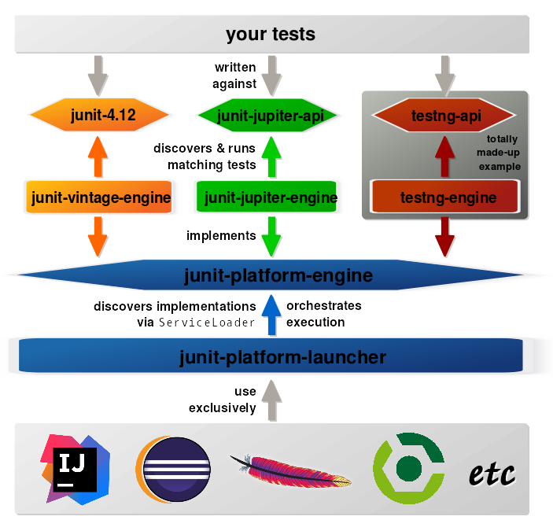
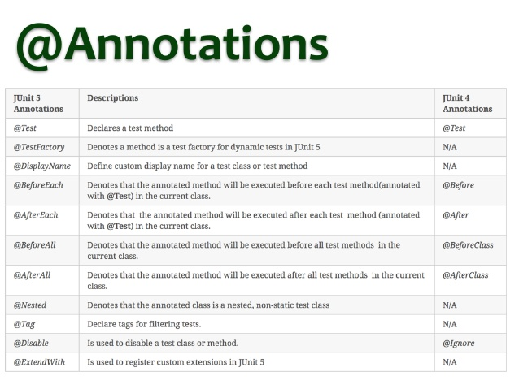
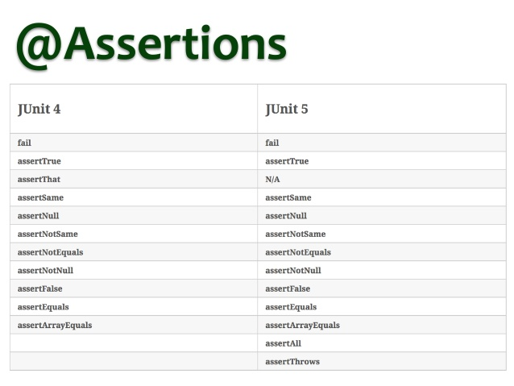

<!DOCTYPE HTML>
<html>
<head><meta name="generator" content="Hexo 3.9.0">
  <meta charset="utf-8">
  <meta http-equiv="X-UA-Compatible" content="IE=edge">
  <meta name="apple-mobile-web-app-capable" content="yes">
  <meta name="apple-mobile-web-app-status-bar-style" content="black">
  <meta name="google-site-verification" content>
  
  <title>JUnit 5的前世今生</title>
  <meta name="author" content="Emac">
   <meta name="description" content="起源
前事不忘，后事之师。–《战国策·赵策一》

对Java程序员而言，JUnit无疑是使用最广泛的单元测试框架。自2006年初JUnit 4发布之后，11年间陆陆续续更新了13个小版本，最新的4.12版本是在2014年底发布的。在现今新技术、新框架层出不穷的IT圈，JUnit的版本更新速度不可谓不">
  

  <meta property="og:title" content="JUnit 5的前世今生">
  <meta name="viewport" content="width=device-width, initial-scale=1, maximum-scale=1">
  <meta property="og:site_name" content="Emac">
 <meta property="og:image" content="undefined">
  
  <link href="/apple-touch-icon-precomposed.png" sizes="180x180" rel="apple-touch-icon-precomposed">
  <link rel="alternate" href="/atom.xml" title="Emac" type="application/atom+xml">
  <link rel="stylesheet" href="//cdn.bootcss.com/bootstrap/3.3.6/css/bootstrap.min.css">
  <link rel="stylesheet" href="//cdn.bootcss.com/font-awesome/4.5.0/css/font-awesome.min.css">
  <link rel="stylesheet" href="/css/m.min.css">
  <link rel="icon" type="image/x-icon" href="/favicon.ico">
</head>
</html>
<body>
  <div id='wx_pic' style='display:none;'></div>
  <div id="main">
    <div class="behind">
      <div class="back">
        <a href="/" class="black-color"><i class="fa fa-times" aria-hidden="true"></i></a>
      </div>
      <div class="description">
        &nbsp;拾贝
      </div>
    </div>
    <div class="container">
      

  <article class="standard post">
    <div class="title">
      
  
    <h1 class="page-title center">
        JUnit 5的前世今生
    </h1>
  


    </div>
    <div class="meta center">
      
<time datetime="2017-04-08T16:00:00.000Z">
  <i class="fa fa-calendar"></i>&nbsp;
  2017-04-09
</time>


    
    &nbsp;
    <i class="fa fa-tag"></i>&nbsp;
    <a href="/categories/arch/">arch</a>


    
    &nbsp;
    <i class="fa fa-tag"></i>&nbsp;
    <a href="/tags/原创/">原创</a>·<a href="/tags/测试/">测试</a>


    </div>
    <hr>
    <div class="picture-container">
      
    </div>
    <h2 id="起源"><a href="#起源" class="headerlink" title="起源"></a>起源</h2><blockquote>
<p>前事不忘，后事之师。–《战国策·赵策一》</p>
</blockquote>
<p>对Java程序员而言，JUnit无疑是使用最广泛的单元测试框架。自2006年初JUnit 4发布之后，11年间陆陆续续更新了13个小版本，最新的4.12版本是在2014年底发布的。在现今新技术、新框架层出不穷的IT圈，JUnit的版本更新速度不可谓不缓慢，这一点上，和去年同期发布的<a href="http://emacoo.cn/devops/jenkins-2-0-from-ci-to-cd/">Jenkins 2.0</a>如出一辙，后者也花了11年才升级了一个大版本。让我们回到2006年初，看看当时的Java程序员都玩些啥？</p>
<ul>
<li><a href="https://en.wikipedia.org/wiki/Java_(programming_language" target="_blank" rel="noopener">Java 5</a>发布1年多，很多公司还在使用JDK 1.4，离Java 6正式发布还有大半年，更别提Java 8了。</li>
<li><a href="https://en.wikipedia.org/wiki/Spring_Framework" target="_blank" rel="noopener">Spring</a>初出茅庐，离第一桶金Jolt和JAX大奖还有几个月，离2.0发布还有大半年，更别提Spring Boot和Spring Cloud了。</li>
<li><a href="https://en.wikipedia.org/wiki/Apache_Maven" target="_blank" rel="noopener">Maven</a>比Spring老道一点，不过也只是2.0 Beta阶段，更别提Maven 3了。</li>
</ul>
<p>了解了JUnit 4的出生背景，就不难理解如今JUnit 4的问题所在了。</p>
<ul>
<li>Extension：相对于其应用的体量，JUnit的可扩展性不可谓不粗糙。Runner和Rules是扩展JUnit的主要手段，前者虽然强大，但是粒度太粗，扩展者需要从零实现全测试周期的支持，并且一个单元测试类只能绑定一个Runner，无法同时使用多个Runner。Rules虽然解决了粒度的问题，但扩展能力非常有限，只能作用于测试周期的特定阶段。</li>
<li>Modularity：在Maven之前，一个Java应用依赖的Jar包往往都是人工进行管理的，既繁琐又容易出错，因此，那个时候all-in-one风格的fat Jar更受程序员欢迎。但是当Maven，Ivy以及之后Gradle接管了应用的依赖管理之后，模块化成为了主流，以前的fat Jar由于包的大小、更容易导致依赖冲突等原因逐渐的不再受到青睐，甚至被打入冷宫。</li>
<li>Java 8：距离Java 8正式发布已经整整过去3年，Java程序员也渐渐习惯了使用Lambda表达式，对于一些新生代的Java程序员而言，没有Lambda表达式甚至都不会写Java代码了。</li>
</ul>
<p>以上这些局限就构成了JUnit 5的起源。除此之外，JUnit 5还有更大的野心，JUnit as a Platform。</p>
<h2 id="架构"><a href="#架构" class="headerlink" title="架构"></a>架构</h2><blockquote>
<p>你的是我的，我的还是我的。</p>
</blockquote>
<p>什么是JUnit as a Platform？既然敢叫Platform，那目光自然就不能局限于JUnit自己了。通过引入JUnit Platform，JUnit 5不但可以运行新老版本的JUnit测试，甚至还可以运行别人家的单元测试，比如TestNG。套用一个现在流行的词，就叫降维打击。</p>
<p><br><em>图片出处：<a href="https://www.infoq.com/articles/JUnit-5-Early-Test-Drive" target="_blank" rel="noopener">JUnit 5 - An Early Test Drive - Part 1</a></em></p>
<p>从上图可以看到，完整的JUnit 5平台从上至下分为四层：</p>
<ol>
<li>面向developer的API，比如各种测试注解</li>
<li>特定于某一单元测试框架的测试引擎，比如JUnit 4，JUnit 5，TestNG</li>
<li>通用的测试引擎，是对第2层各种单元测试框架的抽象</li>
<li>面向IDE的启动器，用于调度和执行各个单元测试</li>
</ol>
<p>前两层体现的是JUnit as a Tool，还属于Junit原本的范畴，而后两层体现的就是JUnit as a Platform，JUnit 5也借此实现了十年磨一剑的凤凰涅槃。有了JUnit as a Platform这把屠龙刀，相比于其他单元测试框架，可以说JUnit 5占据了技术制高点，可以预期，未来JUnit的版图将进一步扩大，将触角延伸至更多的测试领域。</p>
<h2 id="特性"><a href="#特性" class="headerlink" title="特性"></a>特性</h2><p>分析完JUnit 5架构上的调整，接下来再看一下除了Java 8的支持，JUnit 5具体包含了哪些值得一提的新特性。</p>
<ul>
<li>兼容性：为了最大程度的保证对JUnit 4以及更早版本的兼容性，JUnit 5启用了新的命名空间org.junit.jupiter.api.*，通过引入junit-vintage-engine模块，支持老的命名空间org.junit.*，并且新老版本可以共存于同一项目，独立运行互不影响。</li>
<li>新的注解：<ul>
<li>@DisplayName, @Tag注解：引入更灵活的基于字符串的@Tag注解，取代老的基于类的@Category注解，配以@DisplayName注解，让管理大量单元测试变得更容易。</li>
<li>@Nested注解：支持BDT(Behavior Driven Testing)风格的单元测试。</li>
</ul>
</li>
<li><a href="http://junit.org/junit5/docs/current/user-guide/#writing-tests-parameterized-tests" target="_blank" rel="noopener">Parameterized Tests</a>：批量生成参数化的单元测试，比如针对一个枚举类，为其每一个枚举值生成一个单元测试。</li>
<li><a href="http://junit.org/junit5/docs/current/user-guide/#writing-tests-dynamic-tests" target="_blank" rel="noopener">Dynamic Tests</a>：程序化生成单元测试，比如动态从数据库中读取数据，生成单元测试。</li>
<li><a href="http://junit.org/junit5/docs/current/user-guide/#extensions" target="_blank" rel="noopener">Extention</a>：JUnit 5提供了多种扩展方式，涉及测试周期的各个阶段，比如激活条件，参数解析，回调函数，异常处理等。通过实现特定接口，配合@ExtendWith注解，你很容易就可以重新定义一个单元测试的执行流程。</li>
</ul>
<p>为了更好的理解这些特性，不妨去GitHub看一下JUnit官方的<a href="https://github.com/junit-team/junit5-samples" target="_blank" rel="noopener">示例工程</a>。</p>
<h2 id="Roadmap"><a href="#Roadmap" class="headerlink" title="Roadmap"></a>Roadmap</h2><p>根据最新的JUnit<a href="https://github.com/junit-team/junit5/wiki/Roadmap" target="_blank" rel="noopener">官方文档</a>，JUnit 5将于今年第三季度的某一时刻发布，在此之前，还将发布若干个RC版本。目前最新的稳定版本是5.0.0-M4。</p>
<p>你，准备好了吗？</p>
<h2 id="附录：JUnit-5和JUnit-4的快速对比"><a href="#附录：JUnit-5和JUnit-4的快速对比" class="headerlink" title="附录：JUnit 5和JUnit 4的快速对比"></a>附录：JUnit 5和JUnit 4的快速对比</h2><p><br><br><em>图片出处：<a href="https://www.slideshare.net/rkmael/junit-5-vs-junit-4" target="_blank" rel="noopener">JUnit 5 vs JUnit 4</a></em></p>
<h2 id="参考"><a href="#参考" class="headerlink" title="参考"></a>参考</h2><ul>
<li><a href="http://junit.org/junit5/docs/current/user-guide/" target="_blank" rel="noopener">JUnit 5 User Guide</a></li>
<li><a href="https://www.infoq.com/articles/JUnit-5-Early-Test-Drive" target="_blank" rel="noopener">JUnit 5 - An Early Test Drive - Part 1</a></li>
<li><a href="https://www.slideshare.net/SpringCentral/testing-with-spring-43-junit-5-and-beyond" target="_blank" rel="noopener">Testing with Spring 4.3, JUnit 5, and Beyond</a></li>
<li><a href="https://objectpartners.com/2016/07/26/junit-5-with-spring-boot-plus-kotlin/" target="_blank" rel="noopener">JUnit 5 with Spring Boot (plus Kotlin)</a></li>
</ul>


  </article>
  </script>


    </div>
  </div>
  <footer class="page-footer"><div class="clearfix">
</div>
<div class="right-foot container">
    <div class="firstrow">
        <a href="#top" >
        <i class="fa fa-arrow-right"></i>
        </a>
        © emacoo.cn 2015-2024
    </div>
    <div class="secondrow">
        <a href="https://github.com/gaoryrt/hexo-theme-pln">
        
        </a>
    </div>
</div>
<div class="clearfix">
</div>
<script async src="//busuanzi.ibruce.info/busuanzi/2.3/busuanzi.pure.mini.js"></script>
<div class="busuanzi center">
    <span id="busuanzi_container_site_pv">本站总访问量<span id="busuanzi_value_site_pv"></span>次</span>
    <span id="busuanzi_container_site_uv">本站访客数<span id="busuanzi_value_site_uv"></span>人次</span>
    <span id="busuanzi_container_page_pv">
      本文总阅读量<span id="busuanzi_value_page_pv"></span>次
    </span>
</div>
</footer>
  <script src="//cdn.bootcss.com/jquery/2.2.1/jquery.min.js"></script>
<script src="/js/search.js"></script>
<script type="text/javascript">

// comments below to disable loading animation
function revealOnScroll() {
  var scrolled = $(window).scrollTop();
  $(".excerpt, .index-title, .index-meta, p").each(function() {
    var current = $(this),
      height = $(window).outerHeight(),
      offsetTop = current.offset().top;
    (scrolled + height + 50 > offsetTop) ? current.addClass("animation"):'';
  });
}
$(window).on("scroll", revealOnScroll);
$(document).ready(revealOnScroll)

// disqus scripts


// dropdown scripts
$(".dropdown").click(function(event) {
  var current = $(this);
  event.stopPropagation();
  $(current).children(".dropdown-content")[($(current).children(".dropdown-content").hasClass("open"))?'removeClass':'addClass']("open")
});
$(document).click(function(){
    $(".dropdown-content").removeClass("open");
})

// back to top scripts
$("a[href='#top']").click(function() {
  $("html, body").animate({ scrollTop: 0 }, 500);
  return false;
});


var path = "/search.xml";
searchFunc(path, 'local-search-input', 'local-search-result');

</script>

</body>
</html>
